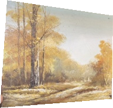
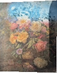

A selection of works gathered for close looking, conversation, and the right next home.


The collection
Selected works
This is a selection from a larger collection. Some photographs are small or incomplete; artist, medium, condition and provenance are being researched.
01 / Landscape
Golden Autumn
Landscape; artist unknown. Medium, dimensions and authenticity unconfirmed. A fall landscape; the available source image is a small photo crop.
Screening estimate: $25–200 if an original work; reproduction may be worth less. Preliminary only, not an appraisal.
Artwork details & documentation
Available image is a small crop; a full front and signature detail would help establish its identity.
Dimensions, condition, medium, provenance and authenticity: under review. Comparable sold works: not yet verified for this piece. Ask for available documentation and current price.
02 / Architectural landscape
Waterline Castle
Architectural landscape; artist unknown. Medium, dimensions and authenticity unconfirmed. A red-roofed tower by water; the source image is a small photo crop.
Screening estimate: $25–200 if an original work; reproduction may be worth less. Preliminary only, not an appraisal.
Artwork details & documentation
The small crop shows a red-roofed waterside scene; check a full front, reverse and any labels.
Dimensions, condition, medium, provenance and authenticity: under review. Comparable sold works: not yet verified for this piece. Ask for available documentation and current price.
03 / Figurative
Family in Folk Dress
Figurative scene; artist unknown. Medium, dimensions and authenticity unconfirmed. A folk-style family scene; the source image is a small photo crop.
Screening estimate: $25–200 if an original work; reproduction may be worth less. Preliminary only, not an appraisal.
Artwork details & documentation
The documentary crop differs from a prior rendering; compare it with the physical work before attribution.
Dimensions, condition, medium, provenance and authenticity: under review. Comparable sold works: not yet verified for this piece. Ask for available documentation and current price.
04 / Rural landscape
Mountain Road
Rural landscape; artist unknown. Medium, dimensions and authenticity unconfirmed. A barn, vehicle, and mountains; the source image is a small photo crop.
Screening estimate: $25–200 if an original work; reproduction may be worth less. Preliminary only, not an appraisal.
Artwork details & documentation
The small crop shows a barn, vehicle and mountains; examine the signature and reverse.
Dimensions, condition, medium, provenance and authenticity: under review. Comparable sold works: not yet verified for this piece. Ask for available documentation and current price.
05 / Landscape
Blue Roof, Open Sky
Cottage landscape; artist unknown. Medium, dimensions and authenticity unconfirmed. A cottage among trees; the source image is a small photo crop.
Screening estimate: $25–200 if an original work; reproduction may be worth less. Preliminary only, not an appraisal.
Artwork details & documentation
Only a small crop is available; inspect the complete work, its surface and signature.
Dimensions, condition, medium, provenance and authenticity: under review. Comparable sold works: not yet verified for this piece. Ask for available documentation and current price.
06 / Figurative
Broad-Hat Color
Figurative group; artist unknown. Medium, dimensions and authenticity unconfirmed. The available original photo is cropped and does not show the complete work.
Screening estimate: $25–200 if an original work; reproduction may be worth less. Preliminary only, not an appraisal.
Artwork details & documentation
The available crop is incomplete; the full work needs to be photographed and reviewed.
Dimensions, condition, medium, provenance and authenticity: under review. Comparable sold works: not yet verified for this piece. Ask for available documentation and current price.
07 / Portrait
Mother and Child
Portrait; artist unknown. Medium, dimensions and authenticity unconfirmed. The available source is a small mother-and-child photo crop.
Screening estimate: $25–200 if an original work; reproduction may be worth less. Preliminary only, not an appraisal.
Artwork details & documentation
The small crop does not establish whether this is a drawing, painting or print.
Dimensions, condition, medium, provenance and authenticity: under review. Comparable sold works: not yet verified for this piece. Ask for available documentation and current price.
08 / Figurative
Pale Blue Pair
Figurative scene; artist unknown. Medium, dimensions and authenticity unconfirmed. Figures in pale blue clothing; the source image is a small photo crop.
Screening estimate: $25–200 if an original work; reproduction may be worth less. Preliminary only, not an appraisal.
Artwork details & documentation
The small crop does not establish the medium or artist; inspect the front, back and marks.
Dimensions, condition, medium, provenance and authenticity: under review. Comparable sold works: not yet verified for this piece. Ask for available documentation and current price.
09 / Portrait
Turquoise Ornament
Portrait; artist unknown. Medium, dimensions and authenticity unconfirmed. The source image shows a visible tear or loss; the exact condition requires inspection.
Screening estimate: $10–100 if an original work; reproduction may be worth less. Preliminary only, not an appraisal.
Artwork details & documentation
A possible opening or loss appears in the source image; the extent requires physical inspection.
Dimensions, condition, medium, provenance and authenticity: under review. Comparable sold works: not yet verified for this piece. Ask for available documentation and current price.
10 / Still life
Blue & White Bouquet
Floral still life; artist unknown. Medium, dimensions and authenticity unconfirmed. Flowers in a vase; the source image is a small photo crop.
Screening estimate: $25–200 if an original work; reproduction may be worth less. Preliminary only, not an appraisal.
Artwork details & documentation
The small crop does not establish the medium or signature; inspect the complete piece.
Dimensions, condition, medium, provenance and authenticity: under review. Comparable sold works: not yet verified for this piece. Ask for available documentation and current price.
11 / Western portrait · ART-008
Western Portrait
Artist unconfirmed. Anibal Canales is a signature-based research lead; a shared research note also mentions a Lane Sanders Tom Selleck drawing, but does not establish that it is this work. Subject, medium, original or reproduction, and dimensions require verification.
Preliminary private-sale estimate: $50–$200 if an original. This is a working estimate, not an appraisal. Price on inquiry.
Artwork details & documentation
The full-front photograph and signature are available for research. Anibal Canales is a possible lead only; a reliable match and provenance have not been established. A published work credited to Anibal Canales is a research reference, not proof that this portrait is his.
Dimensions, condition, medium, provenance and authenticity: under review. Comparable sold works: not yet verified for this piece. Ask for available documentation and current price.
The wider collection
Additional catalog records
These 27 working inventory records may overlap with the works pictured above. Photo matches, artist identities, condition, and availability need confirmation.
Ranges below are older provisional figures from the collection inventory. They are not verified sales comparisons, appraisals or confirmed asking prices. Please inquire for current details.
Explore the 27 inventory records
ART-001
Figurative group in red dress
Earlier inventory screening range: $75–$250. Not an appraisal or confirmed asking price.
Review: Check signature and full-front image.
ART-002
Palm / botanical scene
Earlier inventory screening range: $25–$85. Not an appraisal or confirmed asking price.
Review: Verify medium and edition.
ART-003
Wildlife cub / cat
Earlier inventory screening range: $35–$125. Not an appraisal or confirmed asking price.
Review: Review certificate and edition.
ART-004
Misty forest / “Summer Rain”
Earlier inventory screening range: $30–$120. Not an appraisal or confirmed asking price.
Review: Review signature and glazing.
ART-005
Harbor village with sailboats
Earlier inventory screening range: $50–$175. Not an appraisal or confirmed asking price.
Review: Inspect surface and signature.
ART-006
Coastal fishing scene
Earlier inventory screening range: $75–$225. Not an appraisal or confirmed asking price.
Review: Verify inscription and medium.
ART-007
Geometric modern abstraction
Earlier inventory screening range: $50–$180. Not an appraisal or confirmed asking price.
Review: Review signature and edges.
ART-008
Western portrait
Earlier inventory screening range: $40–$160. A later review lists $50–$200 if original. Not an appraisal or confirmed asking price.
Review: Compare signature and provenance.
ART-009
“... Old Town”
Earlier inventory screening range: $35–$140. Not an appraisal or confirmed asking price.
Review: Inspect reverse label and artist name.
ART-010
Mountain village
Earlier inventory screening range: $60–$220. Not an appraisal or confirmed asking price.
Review: Review signature and back.
ART-011
Cottage and garden
Earlier inventory screening range: $30–$110. Not an appraisal or confirmed asking price.
Review: Verify medium.
ART-012
Mother and child / woman
Earlier inventory screening range: $50–$200. Not an appraisal or confirmed asking price.
Review: Review front and signature.
ART-013
The Continental Pier
Earlier inventory screening range: $35–$150. Not an appraisal or confirmed asking price.
Review: Check publisher and edition.
ART-014
Standing fashion figure
Earlier inventory screening range: $25–$100. Not an appraisal or confirmed asking price.
Review: Inspect artist mark and medium.
ART-015
Autumn landscape
Earlier inventory screening range: $60–$220. Not an appraisal or confirmed asking price.
Review: Review signature.
ART-016
Forest rocks landscape
Earlier inventory screening range: $75–$250. Not an appraisal or confirmed asking price.
Review: Review signature.
ART-017
House and moon geometric scene
Earlier inventory screening range: $40–$160. Not an appraisal or confirmed asking price.
Review: Inspect back and edges.
ART-018
Owl-themed work
Earlier inventory screening range: $35–$150. Not an appraisal or confirmed asking price.
Review: Confirm title and medium.
ART-019
Snowy village landscape
Earlier inventory screening range: $150–$600. Not an appraisal or confirmed asking price.
Review: Verify artist, medium and provenance. The inventory records an “Edward Jackson” signature reading; the precise identity is unconfirmed.
Earlier inventory screening range: $40–$180. Not an appraisal or confirmed asking price.
Review: Review plaque and reverse.
ART-021
Asian bird and flowers
Earlier inventory screening range: $35–$140. Not an appraisal or confirmed asking price.
Review: Review seals and reverse.
ART-022
Fiji tropical work
Earlier inventory screening range: $150–$500. Not an appraisal or confirmed asking price.
Review: Review certificate, material and size. The inventory notes a Maria Rova / Sigavou Studios certificate; the certificate and its relationship to this particular piece need independent confirmation.
Earlier inventory screening range: $45–$180. Not an appraisal or confirmed asking price.
Review: Review label and signature.
ART-024
Framed poem / text art
Earlier inventory screening range: $10–$40. Not an appraisal or confirmed asking price.
Review: Verify publisher and condition.
ART-025
Farm / pasture landscape
Earlier inventory screening range: $60–$220. Not an appraisal or confirmed asking price.
Review: Review signature and medium.
ART-026
Large cat wildlife
Earlier inventory screening range: $30–$120. Not an appraisal or confirmed asking price.
Review: Check edition and publisher.
ART-027
Woman in red seated interior
Earlier inventory screening range: $75–$275. Not an appraisal or confirmed asking price.
Review: Review signature and medium.
The collection story
A collection built for conversation.
This private collection moves between landscape, portrait, domestic color, and memory. The appeal is in the range: quiet works sit beside bolder, more expressive pieces, creating a group that feels personal rather than overly uniform.
Artist names, authenticity and medium remain unconfirmed unless stated otherwise. Screening estimates are rough, conditional on the work being an original, and are not appraisals. Reproductions may have lower value. The ten earlier works use small source photo crops, some incomplete; please request better images, dimensions and condition details. Western Portrait is a full photograph. Estimates use unrelated estate-sale results as context, not verified sales by the same artists.
Collection records
Know the work.
Each work is being documented individually to help collectors and specialists review it with confidence.
Documentation may include front and reverse photographs, signature and label details, dimensions, condition notes, acquisition history, and any available certificates. Artist names and authenticity are stated as unconfirmed until supported by evidence. A signature or certificate alone does not establish authenticity.
Interested in a piece? Ask for its current record or an opportunity to arrange specialist review. Prices and availability are discussed on inquiry.
Start a conversation
Which piece stayed with you?
Tell us what caught your eye. Ask about available photographs, measurements, condition, provenance, or a viewing. Information will be shared as it becomes available.